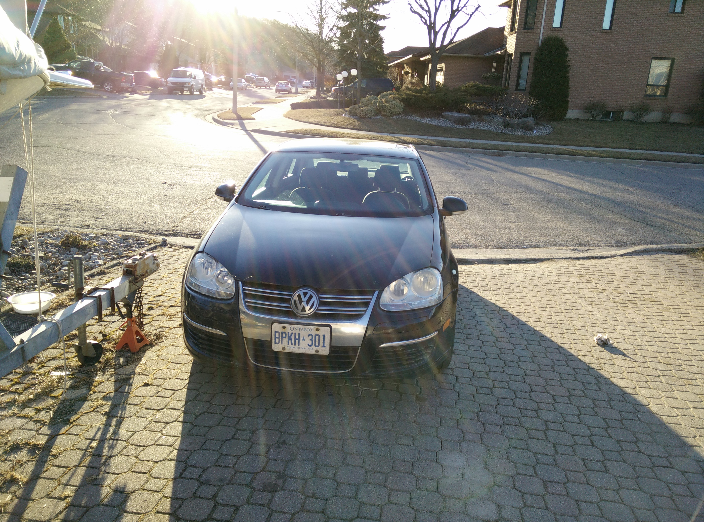

Ever since I passed my driving tests I started looking at what cars I could afford to take me to Brock University. Luckily I had a friend who's dad owned a car body shop and dealt with used crashed cars. He suggested that a diesel engine car would be best since it could go almost twice the distance a gasoline engine vehicle would for the same price in fuel. Luckily he gave me a good deal on a VW Jetta TDI that he had stored.
This became my car to learn on. Anytime that check engine light came on I was opening up the garage doors in front of my house and getting dirty. Some of the work that I put into the Jetta:
At the end of that school year my cousin gave me a call and said he had a job lined up for me working on the railroads in Alberta. Well I thought it would be a good idea to have my car with me and use the opportunity to visit the west coast. So I packed up as much stuff as could fit and drove cross country. We spent the next 7 days and over 5000kms traveling across Canada, though the rocky mountains to Victoria, BC.
I was very impressed with the cars performance and endurance over the entire trip. It was managing 1100kms per 50L of diesel, which was around $50. The car had no problems during the three months I spent in Alberta or on the trip back to Ontario.
At the end of that school year the Jetta had over 350,000kms on the odometer. With 3 months of summer I felt like it was time to sell the Jetta and find a new project to work on. When I told my friend my plan, he smiled and said I have just the car. Since the Jetta was still running in excellent condition it sold quickly for $5000. And with that money I bought a crashed up BMW 335i.
This involved a lot of work on my end. Luckily most of the damage was cosmetics. I found all the body parts through an aftermarket dealer for a very good price. Other parts needed were active xeon headlights, which was the most expensive parts, and a ac condenser. Once all the body parts were bolted onto the frame of the car it looked like this:

The front end of the car needed to get a good paint job. This is one of those tasks that is better left to the professionals that have the proper tools.
The car ended up coming out looking like this:

The BMW is my current daily driver. It has run into more problems in the short span that I have had it, then my Jetta had in the 2 years that I owned it for. The parts are also a lot more expensive for the BMW than for the VW. However the 335i has a much sportier feel is a much faster and overall more enjoyable to drive than the Jetta.
back to home